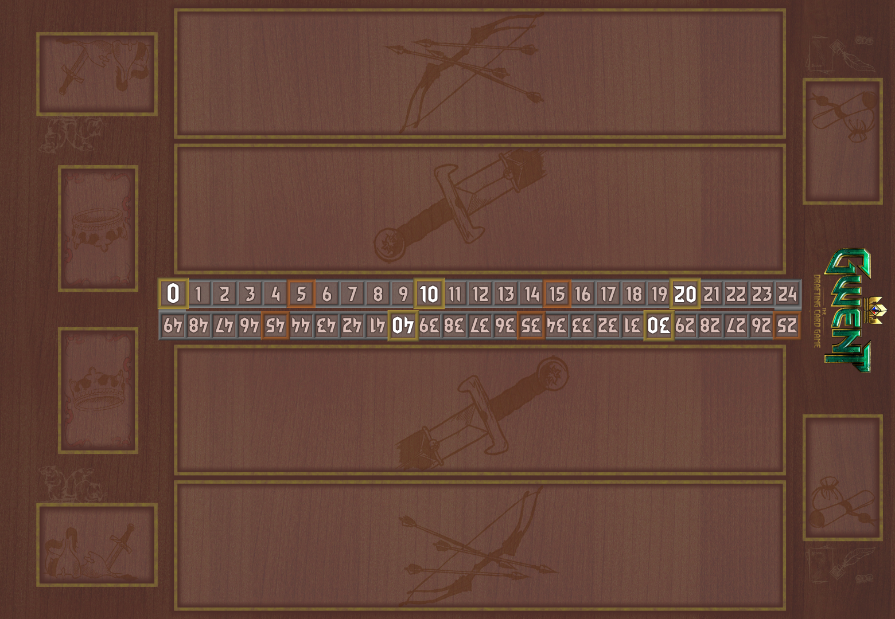
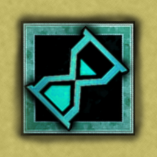

목차
게임 마스터의 역할
이 게임은 웹앱으로 혼자 플레이할 수 있지만, 보드게임 룰북 스타일로 운영할 때 GM은 규칙 판정자, 튜토리얼 진행자, 학습 코치, AI 연출자의 네 가지 역할을 맡는다.
규칙 판정자
합법 수, 행 제한, 카덴차 적용, 점수 재계산 순서를 관리한다. 분쟁이 있으면 항상 로그와 점수 순서표로 돌아간다.
학습 코치
오답을 즉시 벌하지 않고 해설한다. 플레이어가 "왜 이 카드가 강해지는지" 음악 개념과 연결하도록 돕는다.
연출자
AI가 카덴차에 도전할 때 짧은 지휘 연출을 넣고, 패스는 "종지를 선언했다"는 식으로 장면화한다.
기록자
seed, 악장, 최종 점수, 틀린 개념 태그를 남겨 재현과 복습이 가능하게 한다.
모든 판정은 상황 기록에서 시작해 로그 남기기로 끝난다.
구성품과 시각 언어


룰북의 일러스트는 원본 보드/카드/토큰 이미지를 압축해 사용했다.
구성품
| 구성품 | 수량 | 쓰임 | GM 확인 |
|---|---|---|---|
| 플레이어 덱 | 25장 | 플레이어가 사용하는 카드 묶음 | 브론즈 2장 제한, 명인 1장 제한 |
| AI 덱 | 25장 | 난이도별 고정 상대 덱 | easy/normal/hard 중 하나 선택 |
| 리더 | 각 1장 | 충전 횟수를 가진 지휘자 큐 | 덱 진영과 맞아야 함 |
| 행 | 멜로디·화성·리듬 | 카드를 배치하는 세 전장 | 각 행 최대 7장 |
| 승점 토큰 | 청/적 | 악장 승리 표시 | 2개 선취 시 게임 종료 |

쿨다운보드게임 룰북의 시각 리듬을 위해 섹션 사이에 카드 아트 갤러리를 배치했다.
처음 5분 설명 스크립트
처음 플레이어에게는 모든 규칙을 한 번에 말하지 않는다. 아래 순서대로 말하면 한 악장 안에 핵심을 체득한다.
- 목표: 세 악장 중 두 악장을 먼저 따면 이긴다. 한 악장 점수는 세 행의 합이다.
- 손패: 시작 손패는 10장이고 악장 사이 추가 드로우는 없다. 카드를 아끼는 것이 핵심이다.
- 턴: 자기 턴에는 카드 1장 플레이, 리더 큐 사용, 패스 중 하나를 한다.
- 행: 카드는 멜로디, 화성, 리듬 행에 놓인다. 행마다 최대 7장이다.
- 카덴차: 일부 카드는 음악 문제를 맞히면 추가 효과가 발동한다. 도전하지 않아도 기본 파워는 놓인다.
- 패스: 패스하면 그 악장에서는 더 이상 행동하지 않는다. 상대는 계속 둘 수 있다.
- 악장 종료: 양쪽 모두 패스하면 총점을 비교한다. 동점이면 둘 다 승점 1개를 얻는다.
승리 조건
동점 악장
악장 점수가 같으면 양쪽 모두 승점 1개를 얻는다. 이미 양쪽이 1승점씩 가진 상태에서 동점이 나면 둘 다 2승점이 되므로 게임 결과는 무승부다.
게임 종료 시점
양쪽 패스로 악장 점수를 비교하고 승점 지급이 끝난 직후, 어느 한쪽이라도 2승점 이상이면 즉시 게임을 끝낸다.
세팅 절차
- 난이도 선택: 견습(easy), 단원장(normal), 마에스트로(hard) 중 하나를 고른다.
- 덱 선택: 기본은 마조레 스타터다. 커스텀 덱은 25장 검증을 통과해야 한다.
- AI 덱 결정: easy는 리듬 연구소, normal은 단조 길드, hard는 재즈 화성 클럽을 사용한다.
- 시드 생성: 같은 seed는 같은 초기 손패와 AI 결정을 재현한다.
- 셔플과 드로우: 양쪽 덱을 섞고 10장을 손패로 든다.
- 멀리건: 각자 최대 2장까지 교체한다. 교체한 카드는 덱에 섞이고 새 카드 1장을 뽑는다.
- 선공 결정: seed 기반 동전 판정으로 첫 턴을 정한다.
공통 규칙
10장 손패, 2멀리건, 드로우 없음
보드와 행
전장은 AI 3행, 중앙 점수대, 플레이어 3행으로 읽는다. 구현상 ROWS 순서는 melody, harmony, rhythm이지만 화면은 상대와 내 영역을 직관적으로 나누어 표시한다.
행 제한은 양쪽 모두 동일하다. 특수 카드는 효과를 처리한 뒤 보관함으로 이동한다.
Melody
음정, 음계, 선율 진행 카드가 주로 놓인다. 약음기 방해의 대상이다.
Harmony
화음, 종지, 텐션 카드가 놓인다. V7-I 인접 보너스가 이 행에서만 작동한다.
Rhythm
박자, 셋잇단, 당김음 카드가 놓인다. 쉼표 방해의 대상이다.
카드 해부도
카드는 기본 파워와 카덴차 보상이 분리되어 있다. 카덴차 실패는 카드를 무효화하지 않는다.
| 정보 | 의미 | GM 판정 포인트 |
|---|---|---|
| 기본 파워 | 카덴차 성공 여부와 관계없이 전장에 놓이는 힘 | 방해가 있으면 비면역 유닛은 base 1로 시작 |
| 행 | 배치 가능한 행 | any는 어느 행이든 가능, 특수 weather는 지정 행 |
| 유형 | 브론즈, 명인, 특수, 리더 | 명인은 1장 제한, 면역을 가질 수 있음 |
| 태그 | 효과와 시너지가 참조하는 키워드 | keyC, tonic, dominant, solfege 등 |
| 카덴차 | 문제 유형, 티어, 성공 보상 | 문제와 보상은 플레이 전에 공개 |
턴 진행
멀리건이 끝난 뒤에는 카드 플레이, 리더 큐, 패스가 핵심 선택지다.
합법 행동
- 카드 플레이: 손패에서 카드 1장을 고르고 합법 행에 배치한다. 카덴차 카드라면 도전 여부를 먼저 정한다.
- 리더 큐: 리더 충전이 1 이상이면 리더 효과를 사용한다. 사용 후 충전을 1 줄인다.
- 패스: 해당 악장에서 더 이상 행동하지 않겠다고 선언한다.
턴 넘김
상대가 아직 패스하지 않았다면 행동 후 턴이 상대에게 넘어간다. 상대가 이미 패스했다면 행동권은 계속 현재 플레이어에게 남는다. 이 규칙 때문에 상대 패스 후에는 필요한 만큼만 점수를 넘기고 패스하는 것이 중요하다.
카덴차 체크
카덴차는 카드를 내기 전 기대값을 계산하게 만드는 교육형 베팅 장치다.
문제 유형
| 유형 | 예시 | 운영 |
|---|---|---|
| theory_mc | 장3도 반음 수 | 4지선다, 즉시 채점 |
| theory_build | C장조 음계 구성 | 구성음/구조 선택 |
| ear_interval | 장3도, 완전5도 | 최대 3회 듣기 |
| ear_chord | 장화음, C9 | 화음 청음 |
| ear_rhythm | 셋잇단, 점음표 | 리듬 청음 또는 패턴 선택 |
카덴차 판정 원칙
- 카드의 기본 파워는 항상 배치된다.
- 도전 전에 문제 유형, 티어, 보상을 보여준다.
- 정답이면 카드 효과를 즉시 해결한다.
- 오답이면 기본 배치만 유지하고 해설을 기록한다.
- AI 카덴차는 난이도별 성공률로 굴린다.
점수 계산
계산 순서를 바꾸면 결과가 달라진다. 룰 분쟁의 대부분은 이 표로 해결된다.
기본 공식
유닛 원점수 = 방해 적용 기본값 + 증폭 - 피해. 원점수가 0 이하가 되면 해당 유닛은 보관함으로 이동한다. 이후 앙상블 시너지와 포르티시모를 순서대로 적용해 행 점수를 얻는다.
| 상황 | 계산 | 결과 |
|---|---|---|
| 방해 melody에 장3도(base 3, boost +3) | base가 1이 되고 +3 | 4점 |
| 도·미·솔 같은 melody 행 | (2+2+3) × 2 | 14점 |
| V7 옆에 I 배치 | V7 +3, I +3 | 두 카드 모두 보너스 |
| keyC 3장 이상 | 해당 keyC 카드마다 +1 | 행 전체가 조성 결속 |
| 포르티시모 행 | 비명인만 최종 ×2 | 명인은 배율 제외 |
앙상블 시너지
GM 판정 세부
- 화음 결속: bondMembers의 모든 카드가 같은 행에 존재하면 해당 bondGroup 멤버 점수를 각각 2배로 만든다.
- 종지 인접: harmony 행에서 cadence를 가진 카드와 지정 태그 카드가 배열상 바로 이웃해야 한다.
- 조성 결속: 같은 keyTag가 한 행에 3장 이상 있으면 그 keyTag 카드 모두 +1을 받는다.
- 중첩: 결속, 종지, 조성 적용이 끝난 뒤에 포르티시모를 마지막으로 적용한다.
특수 카드와 리더 큐
특수 카드
| 카드 | 효과 | GM 메모 |
|---|---|---|
| 스타카토 | 상대 전장 최고 원점수 유닛 제거 | 동점 최고 파워는 모두 제거 |
| 포르티시모 | 내 행 하나 비명인 ×2 | 행당 플래그처럼 남아 점수 계산 4단계에서 적용 |
| 도돌이표 | 보관함 유닛 1장 재배치 | 카덴차는 재발동하지 않는다 |
| 페르마타 | 내 행 첫 유닛 sustain | 다음 악장에 남지만 boost/damage는 리셋 |
| 쉼표/약음기/불협화음 | 상대 지정 행 방해 | 방해 행 비면역 유닛 base 1 |
| 투티 클리어 | 모든 방해 해제 | 양쪽 방해 전부 제거 |
리더 큐
| 리더 | 충전 | 효과 |
|---|---|---|
| 마에스트라 마조레 | 2 | 내 최고 원점수 유닛 +3 |
| 퍼커션 디렉터 | 3 | 내 rhythm 행 전체 +1 |
| 길드마스터 미노레 | 2 | 보관함 브론즈 1장을 손으로 회수 |
| 텐션 디렉터 | 1 | 내 유닛이 가장 많은 행에 포르티시모 |
패스와 악장 종료
패스는 이 게임의 핵심 심리전이다. 점수보다 중요한 것은 손패 차이다.
- 플레이어가 패스를 선언하면 해당 악장에서 더 이상 행동할 수 없다.
- 상대가 아직 패스하지 않았다면 상대는 계속 카드와 리더를 사용할 수 있다.
- 양쪽 모두 패스하면 즉시 점수 계산 순서대로 양쪽 총점을 계산한다.
- 높은 쪽이 승점 1개를 얻는다. 동점이면 양쪽 모두 1개를 얻는다.
- 2승점이 된 쪽이 있으면 게임을 끝낸다. 아니면 전장을 정리하고 다음 악장으로 간다.
악장 정리
| 요소 | 정리 | 예외 |
|---|---|---|
| 일반 유닛 | 보관함으로 이동 | sustain 유닛은 남음 |
| sustain 유닛 | 전장에 남고 sustain 해제 | boost/damage는 0으로 리셋 |
| 방해 | 전부 해제 | 없음 |
| 포르티시모 | 전부 해제 | 없음 |
| pending 효과 | 전부 제거 | 다음 악장으로 넘어가지 않음 |
AI 지휘자 운영
| 난이도 | T1 | T2 | T3 | T4 | 운영 느낌 |
|---|---|---|---|---|---|
| easy | 50% | 30% | 15% | 5% | 손패를 쉽게 쓰며 단순히 높은 점수를 좇는다. |
| normal | 75% | 60% | 45% | 25% | 악장을 포기할 때와 밀어붙일 때를 구분한다. |
| hard | 95% | 85% | 70% | 55% | 상대 응수를 가정하고 과투자를 유도한다. |
예시 악장 진행
아래 예시는 GM이 튜토리얼에서 소리 내어 진행하기 좋은 첫 악장 흐름이다.
- 플레이어: 장3도를 melody에 둔다. 카덴차 T1 이론에 도전해 맞히면 3+3=6점이 된다.
- AI: 4분음표 비트를 rhythm에 둔다. AI 총점 2점.
- 플레이어: 도를 melody에 둔다. 아직 도-미-솔 결속은 미완성이다.
- AI: 쉼표를 사용해 플레이어 rhythm을 방해한다. 아직 rhythm 유닛이 없으므로 미래 압박이다.
- 플레이어: 미를 melody에 둔다. 결속은 여전히 미완성이고, 솔을 찾으면 폭발한다.
- AI: 점음표 카덴차에 성공해 rhythm 점수를 올린다.
- 플레이어: 솔을 melody에 둔다. 도·미·솔이 완성되어 해당 3장이 각각 2배가 된다.
- 판단: 손패를 더 쓰지 않아도 앞서면 패스한다. AI가 따라오려면 카드를 더 써야 한다.
GM 판정 가이드
분쟁이 반복되면 현재 상태를 기록하고, 합법 수에서부터 다시 확인한다.
자주 묻는 판정
| 질문 | 판정 | 이유 |
|---|---|---|
| 카덴차에 실패하면 카드가 버려지나요? | 아니요. 기본 파워로 배치됩니다. | 카덴차는 추가 보상입니다. |
| 방해 행에 명인이 놓이면 base 1인가요? | 면역 명인은 방해를 무시합니다. | immune 카드 예외입니다. |
| 스타카토 최고 파워가 여러 장이면? | 해당 최고 파워 적 유닛을 모두 제거합니다. | 동점 최고값 전부 대상입니다. |
| 도돌이표로 돌아온 유닛이 카덴차를 또 하나요? | 아니요. cadenzaDone으로 취급합니다. | 재배치는 새 플레이가 아닙니다. |
| 악장 사이 드로우가 있나요? | 없습니다. | 자원 관리가 핵심 룰입니다. |
| 양쪽 1승점에서 동점이면? | 무승부로 게임이 끝납니다. | 양쪽 모두 2승점에 도달합니다. |
카드 색인
아래 표는 현재 구현 기준 카드와 GM 메모다. 룰북 판정은 이 카드 정의를 기준으로 한다.
| ID | 이름 | 행 | 유형 | 파워 | 카덴차 | GM 메모 |
|---|---|---|---|---|---|---|
| mel_maj3 | 장3도 | melody | 브론즈 | 3 | T1 이론 | 성공 시 자신 +3 |
| mel_min3 | 단3도 | melody | 브론즈 | 3 | T1 이론 | 성공 시 자신 +3 |
| mel_p5 | 완전5도 | melody | 브론즈 | 4 | T1 청음 | 성공 시 좌우 이웃 +2 |
| mel_scale | 장음계 | melody | 브론즈 | 5 | T2 구성 | solfege 태그 행 +2 |
| mel_do | 도 | melody | 브론즈 | 2 | - | 도-미-솔 결속 멤버 |
| mel_mi | 미 | melody | 브론즈 | 2 | - | 도-미-솔 결속 멤버 |
| mel_sol | 솔 | melody | 브론즈 | 3 | - | 도-미-솔 결속 멤버 |
| mel_chrom | 반음계 진행 | melody | 명인 | 7 | T3 청음 | 면역, 성공 시 자신 +6 |
| har_tonic | 으뜸화음 I | harmony | 브론즈 | 3 | T1 구성 | 성공 시 자신 +2, V7 인접 보너스 |
| har_subdom | 버금딸림 IV | harmony | 브론즈 | 3 | T1 이론 | 성공 시 자신 +2 |
| har_dom7 | 딸림7화음 V7 | harmony | 브론즈 | 5 | T2 구성 | 다음 tonic 태그 +3, I와 인접 보너스 |
| har_min | 단3화음 | harmony | 브론즈 | 4 | T1 청음 | 성공 시 자신 +3 |
| har_dim | 감3화음 | harmony | 브론즈 | 4 | T2 청음 | 성공 시 자신 +4 |
| har_c9 | 텐션코드 C9 | harmony | 명인 | 8 | T3 청음 | 면역, 성공 시 자신 +6 |
| har_sus4 | 서스포 | harmony | 브론즈 | 5 | T2 이론 | 성공 시 좌우 이웃 +1 |
| rhy_quarter | 4분음표 비트 | rhythm | 브론즈 | 2 | - | 기본 리듬 자원 |
| rhy_dotted | 점음표 | rhythm | 브론즈 | 3 | T1 이론 | 성공 시 자신 +3 |
| rhy_triplet | 셋잇단음표 | rhythm | 브론즈 | 4 | T2 청음 | 성공 시 자신 +4 |
| rhy_eighth | 8분음표 그루브 | rhythm | 브론즈 | 3 | T1 청음 | 성공 시 좌우 이웃 +1 |
| rhy_sync | 당김음 | rhythm | 명인 | 7 | T3 청음 | 면역, 성공 시 자신 +6 |
| rhy_metro | 메트로놈 | rhythm | 특수 | - | - | 단원 토큰 소환 |
| sp_staccato | 스타카토 | any | 특수 | - | - | 상대 전장 최고 파워 유닛 제거 |
| sp_fortissimo | 포르티시모 | any | 특수 | - | - | 내 행 하나의 비명인 점수 2배 |
| sp_reprise | 도돌이표 | any | 특수 | - | - | 보관함 유닛 1장을 재배치 |
| sp_fermata | 페르마타 | any | 특수 | - | - | 내 행 첫 유닛 sustain 부여 |
| sp_rest | 쉼표 | rhythm | 특수 | - | - | 상대 rhythm 행 방해 |
| sp_mute | 약음기 | melody | 특수 | - | - | 상대 melody 행 방해 |
| sp_dissonance | 불협화음 | harmony | 특수 | - | - | 상대 harmony 행 방해 |
| sp_clear | 투티 클리어 | any | 특수 | - | - | 모든 방해 해제 |
| ld_maggiore | 마에스트라 마조레 | leader | 리더 | - | - | 충전 2, 내 최고 유닛 +3 |
| ld_tempo | 퍼커션 디렉터 | leader | 리더 | - | - | 충전 3, 내 rhythm 행 전체 +1 |
| ld_minore | 길드마스터 미노레 | leader | 리더 | - | - | 충전 2, 보관함 브론즈 회수 |
| ld_tension | 텐션 디렉터 | leader | 리더 | - | T2 청음 | 충전 1, 내 최대 행 포르티시모 |
빠른 참조
턴 한 줄 요약
카드 1장, 리더 1회, 패스 중 하나를 한다. 상대가 패스하지 않았으면 턴이 넘어간다.
점수 한 줄 요약
방해 기본값 → 증폭/피해 → 결속/종지/조성 → 포르티시모 순서다.
악장 한 줄 요약
양쪽 패스 → 총점 비교 → 승점 지급 → 정리 또는 게임 종료.
GM 한 줄 요약
문제가 생기면 seed와 로그를 기록하고 합법 수부터 재검산한다.